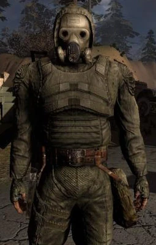
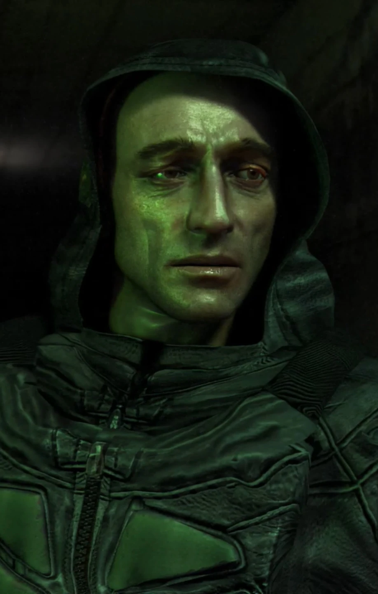
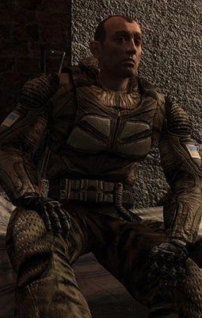
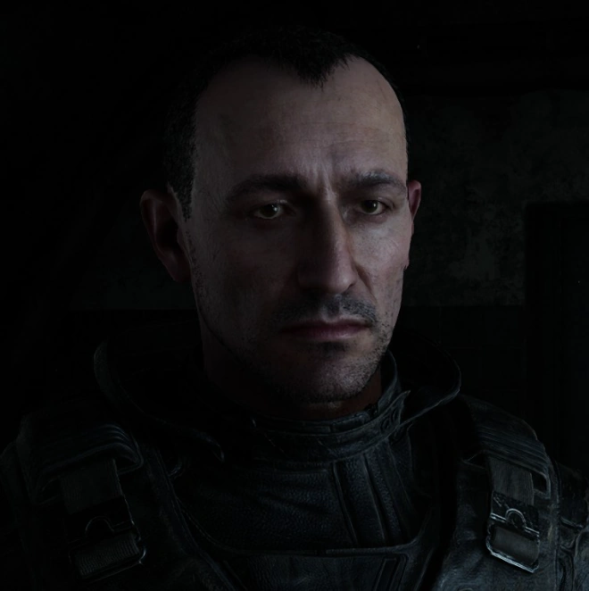

Стрілець: Легенда Зони
Хто це?
Стрілець, також відомий як Мічений — центральний персонаж всесвіту
S.T.A.L.K.E.R.: протагоніст «S.T.A.L.K.E.R.: Тінь Чорнобиля»
,
антагоніст «S.T.A.L.K.E.R.: Чисте Небо», а також ключовий
сюжетний
персонаж у «S.T.A.L.K.E.R.: Поклик Прип'яті» та
«S.T.A.L.K.E.R. 2: Серце
Чорнобиля».
Він — сталкер-легенда, який найближче підібрався до розгадки таємниці
виникнення Зони.
Стрілець вважається одним із найдосвідченіших і
найвідоміших сталкерів, справжнім першопрохідцем, що
неодноразово проникав у саме серце Зони.
Стрілець
заснував власне угруповання, яке отримало назву
Група Стрільця.
До його команди входили такі
видатні сталкери, як Клик,
Привид
та Доктор
— особистості, що також залишили свій слід в історії Зони.
Передісторія
Принаймні з 2009 року Стрілець вивчав Зону разом із Кликом та Привидом,
під час чого вони познайомилмсь з Доктором, який теж цікавився таємницями Зони.
У 2010 році Стрілець знаходить унікальний артефакт невідомого походження -
«Серце Чорнобиля», який ненадовго залишає на зберігання у Доктора.
Під час однієї зі своїх експедицій Стрілець натрапив на карти
підземного міста під Прип’яттю. Він зрозумів — саме тут ключ до
обходу "Випалювача мізків" і дороги до Чорнобильської АЕС.(...)
Стрілець в різних частинах S.T.A.L.K.E.R.
Стрілець в «S.T.A.L.K.E.R.: Чисте Небо»

Оговтавшись після поранень, Стрілець знову вирушає на північ.
Від Клика він дізнається, що хтось дізнався про діяльність їхньої
групи, і тепер за ними ведеться полювання. Щоб дістатися до Центру
Зони, Стрілець вирішує пройти через «Випалювач мізків». Для цього
він прямує на Янтар до професора Сахарова, щоб отримати псі-захист.(...)
Згодом групі Лівші вдається перезапустити клапан, що відповідав за
охолодження установки, і Стрілець вирушає далі — до Рудого лісу.
На узліссі його починає переслідувати найманець Шрам, який виконує
завдання угруповання «Чисте небо». Стрілець заманює його в засідку,
сам проривається в тунель і підриває його за собою.
Тунелем він виходить до околиць заводу «Юпітер». Там залишає свій
унікальний автомат і дві записки для товаришів, а сам прямує до ЧАЕС.
Біля станції його наздоганяє загін «Чистого неба» під керівництвом
Лебедєва. Стрілець намагається пробитися до Саркофага, перебуваючи
під захистом псі-пристрою, однак Шрам за допомогою електромагнітної
рушниці виводить пристрій із ладу. Стається ще один викид.
Після цього Стрілець опиняється в незрозумілому приміщенні,
заповненому апаратурою, екранами та тілами напівживих сталкерів.
На його руці видно татуювання: S.T.A.L.K.E.R..
Стрілець в «S.T.A.L.K.E.R.: Тінь Чорнобиля»

Вантажівка смерті, що перевозила запрограмованих системою S.T.A.L.K.E.R.
людей з метою вбити Стрільця, потрапляє в аварію на північній частині
Кордону. Невідомий сталкер, обшукуючи вантажівку та тіла загиблих у
катастрофі, знаходить єдиного вцілілого — чоловіка з татуюванням
S.T.A.L.K.E.R. на руці. Він приносить його до СидоровичаСидоровича, який
через татуювання незнайомця прозиває його Міченим. Той не пам’ятає ні
свого імені, ні свого минулого. Єдине, що залишилося у його КПК — завдання: «Вбити Стрільця».
Сидорович, у якості плати за порятунок, доручає Міченому перше завдання —
знайти сталкера на прізвисько Спритник, який ніс йому важливу інформацію.
Разом з людьми Вовка, Мічений рятує Спритника з полону бандитів і отримує
друге завдання — добути документи, що знаходяться на військовій базі в НДІ
«Агропром». У них міститься важлива інформація про Центр Зони.(...)
У підземеллі Агропрому Мічений знаходить таємний сховок групи Стрільця.
З матеріалів, залишених там, стає ясно, що один з членів групи загинув, інший
зник, а сам Стрілець попрямував до ЧАЕС.
З документами, викраденими у військових, Мічений вирушає до Бармена,
який
базується на заводі «Росток». Бармен знаходить інформацію вкрай
цінною та
дає нове завдання: дістати інші матеріали з покинутих секретних лабораторій
Х18 та Х16.(...)
Запис з КПК Привида приводить Міченого до Провідника, який начебто знайомий
зі Стрільцем. Той говорить про Доктора, що чекає Стрільця в його старому тайнику.
Мічений вирушає до схованки Стрілка, але по дорозі підривається на розтяжці,
встановленій Доктором за наказом Стрільця. Доктор звертається до нього як до
Стрільця та розповідає про справжню природу Зони: легендарний Моноліт, так
званий Виконавець бажань — не більше ніж ілюзія. Реальна ж таємниця прихована
десь поруч. Доктор пояснює Міченому, що він і є Стрілець і каже, що потрібно
забрати декодер у схованці в Прип’яті.(...)
Діставшись до ЧАЕС і прорвавшись крізь сили «Моноліту» та військових, Стрілець
знаходить ці двері й відкриває їх. Усередині до нього звертається представник
«C-Свідомості» — він розповідає, що Зона є наслідком експерименту, який вийшов
з-під контролю. Їхня мета була — злитися з ноосферою, колективною свідомістю людства.
Відмовившись приєднатися до «С-Свідомості», Стрілець знаходить їхнє сховище — і знищує капсули з тілами вчених.
Стрілець в «S.T.A.L.K.E.R.: Поклик Прип'яті»

Після знищення «С-Свідомості» Стрілець розуміє, що Зона не зникла. Провідник
направляє його підземеллями Прип'яті до військових. Після прибуття до Прип’яті
він приєднується до групи військових під командуванням майора Дегтярьова. Там,
у пральні, де зібралися ті хто вижив під час операції «Фарватер», Стрілець
розповідає про Зону і розкриває справжню причину провалу операції. Після того,
як військові з боєм вириваються з Прип'яті, Стрілець стає головним науковим
консультантом у НДІЧАЗ — Науково-дослідному інституті Чорнобильської аномальної зони.
Стрілець в «S.T.A.L.K.E.R.: Серце Чорнобиля»

В лабораторії X-3 після приходу туди Темного та Скіфа, Стрілець вбиває агента
С-Свідомості, який вдруге зазнав впливу зомбірувальних екранів. Після цього він
бере Скіфа на приціл, але опускає зброю, оскільки той не проявив агресії. У
розмові Стрілець розкриває кілька ключових фактів: Темний і Шрам були агентами
C-Свідомості; ніхто не має права контролювати Зону; у Ноосфері немає життя; а
Кайманов «чужими руками намагається виправити власні помилки». Наприкінці діалогу
він дозволяє Скіфу забрати за завданням Доктора сигнатурний картридж. Після
цього серед сталкерів починають ширитися чутки, що Стрілець знову з’явився в
Зоні, і подейкують, ніби він збирає нову групу.(...)
Під час перестрілки з «Вартою» у Фундаменті Стрілець кілька разів виходить на
зв’язок. Після вибуху установки C-Свідомості він знаходить Скіфа, що прийшов до
тями, і вимагає від нього вбити Доктора. Сам він не може цього зробити, оскільки
їх пов’язують давні спогади.
Якщо Скіф обирає будь-яку іншу сторону, на ЧАЕС після словесної перепалки Стрілець
збиває його з ніг і зникає у телепорті. У такому разі він стає одним із фінальних
босів у лабораторії X-7, де використовує не лише вогнепальну зброю, а й телепортується
та атакує аномаліями різної природи. Якщо Скіф підтримав Доктора, йому доведеться зняти
з тіла Стрільця артефакт «Серце Чорнобиля».
Якщо ж Скіф підтримує Стрільця, він пройде у телепорт слідом за ним. Стрілець залишиться
мінувати телепорт і не братиме участі у перестрілці з іскровцями та Шрамом. На фінальній
ділянці шляху до установки Стрілець зазнає поранення від монолітівців з підрозділу
«Граніт», але відмовиться від допомоги. У фіналі гри він вставляє Серце Чорнобиля в О-КТА
та лягає в капсулу, ставши посередником між енергією Ноосфери та Землею ізолюючи Зону.